Portofolio Proyek Strategis & Direktori 40 Rekanan Resmi
Rekam jejak kepemimpinan KJPP NSR dalam penilaian pengadaan tanah Proyek Strategis Nasional (PSN) Kementerian PUPR & BPN, serta kepercayaan 40 institusi perbankan BUMN, bank swasta (termasuk Bank Kasikorn), BUMN karya, dan korporasi terkemuka di Indonesia.
Rekam Jejak Penilaian Jalan Tol PSN
Pengalaman nyata penugasan Pengadaan Tanah Bagi Pembangunan Kepentingan Umum (Kementerian PUPR / Ditjen Bina Marga) merujuk UU No. 2/2012 jo. PP No. 19/2021 dan Standar Penilaian Indonesia (SPI 204).
Jalan Tol Akses IKN (BBPJN Kaltim)
Penilaian ganti rugi tanah, bangunan, dan tanaman di Kel. Karang Joang (Balikpapan Utara) dan Kel. Kariangau (Balikpapan Barat), Kalimantan Timur.
• SPK IKN: 194 bidang (Luas 691.124 m2) & 151 bidang (Luas 160.891 m2)
• Pemberi Tugas: PPK Pengadaan Tanah Jalan Tol BBPJN Kaltim (2022 – 2023)
Jalan Tol Cisumdawu I & Soroja
Penilaian objek pengadaan tanah Jalan Tol Cileunyi – Sumedang – Dawuan I dan Soreang – Pasirkoja di Desa Sukarapih, Desa Mekarsari, Desa Margaluyu, Desa Ciptasari, Desa Sinarmulya, Desa Margamukti, dan Desa Cibeusi, Kab. Sumedang.
• Ruang Lingkup: Penilaian ganti kerugian fisik & non-fisik (SPI 204)
• Pemberi Tugas: Satker Pengadaan Jalan Tol Wilayah I Ditjen Bina Marga
Jalan Tol Kediri – Tulungagung
Pengadaan jasa penilaian (appraisal) harga ganti kerugian objek pengadaan tanah Ruas Jalan Tol Kediri – Tulungagung sebanyak 287 bidang di Desa Tiron, Kec. Banyakan, Kab. Kediri.
• Volume: 287 Bidang Tanah, Bangunan & Tanaman Terdampak
• Pemberi Tugas: TPT Jalan Tol Kediri – Tulungagung, Ditjen Bina Marga (2023)
Jalan Tol Gedebage – Tasikmalaya – Cilacap (Getaci)
Penilaian tanah, bangunan, tanaman, dan objek lainnya terdampak Segmen Gedebage – Garut Utara sebanyak 168 bidang di Desa Padamukti, Kec. Solokan Jeruk, Kab. Bandung.
• Volume: 168 Bidang Segmen Gedebage – Garut Utara
• Pemberi Tugas: PPK Pengadaan Tanah Jalan Tol Getaci Wilayah I (2022)
Jalan Tol Cimanggis – Cibitung (Cimaci I & II)
Penilaian harga tanah (second opinion) 252 bidang Desa Gandamekar Kab. Bekasi, serta Desa Nagrak Kec. Gunung Putri, Desa Limusnunggal, dan Desa Pasir Angin Kec. Cileungsi Kab. Bogor.
• Objek: 252 Bidang Lahan Koridor JORR II Bekasi & Bogor
• Pemberi Tugas: Satker Pengadaan Tanah Jalan Tol Wilayah I (2021 & 2025)
Tol Sigli – Banda Aceh (Sibanceh) & Tol Japek II
Pelaksanaan jasa appraisal dan konsultasi penaksiran pembebasan lahan koridor jalan bebas hambatan Trans Sumatera ruas Sigli – Banda Aceh serta koridor Jalan Tol Jakarta – Cikampek II.
• Standar Metodologi: Standar Penilaian Indonesia (SPI 204)
• Pengawasan Teknis: Kementerian ATR/BPN & Ditjen Bina Marga
2. Infrastruktur Jalur Kereta Api & Akses Stasiun Publik
Double-Double Track (DDT) KA Manggarai – Cikarang Paket B2 (1)
Penilaian ganti rugi tanah, bangunan, dan utilitas pengadaan tanah jalur rel kereta api Double-Double Track (DDT) Paket B2 (1) Kota Bekasi seluas 8.700 m2.
• Pemberi Tugas: Satker Pengadaan Tanah Jalur Kereta Api, Ditjen Perkeretaapian Kemenhub RI
• Ruang Lingkup: Koridor rel kereta api perkotaan padat penduduk, verifikasi alas hak & perhitungan kerugian fisik/non-fisik
Pengadaan Lahan Pembangunan Jalan Akses Stasiun Kereta Sukaresmi
Penilaian pengadaan lahan untuk pembangunan fasilitas intermoda jalan akses Stasiun Kereta Api Sukaresmi Tahap I (sepanjang 575 Meter) dan Tahap II (sepanjang 1.500 Meter) di Kota Bogor.
• Pemberi Tugas: Dinas Bina Marga dan Sumber Daya Air Pemerintah Kota Bogor
• Ruang Lingkup: Penilaian koridor tanah, tanaman, tegakan, dan bangunan fasilitas penunjang transportasi publik
3. Valuasi Portofolio BUMN Industri, Energi & Utilitas Terintegrasi
PT Semen Indonesia (Persero) Tbk • SIG Group
Penilaian komprehensif aset pabrik semen terpadu, area tambang bahan baku, fasilitas klinker, silo, utilitas industri di Pabrik Tuban (Jawa Timur), Pabrik Gresik, dan fasilitas PT Semen Tonasa (Pangkep, Sulsel).
• Objek Valuasi: Lahan kawasan pabrik, mesin & peralatan industri berat, jetty & pelabuhan khusus
• Tujuan: Pelaporan keuangan berkala, asuransi, dan manajemen portofolio aset BUMN
PT Pertamina EP • Wilayah Kaltim & Kaltara
Penilaian aset fasilitas operasi hulu migas, sumur produksi, jaringan pipa transmisi, dan infrastruktur penunjang di Field Bunyu, Field Sangatta, dan Field Tarakan.
• Objek Valuasi: Instalasi pengolahan, workshop mekanikal, lahan operasional, tangki timbun
• Tujuan: Penatausahaan aset hulu energi, uji penurunan nilai (*impairment test*), dan transaksi
PT PLN (Persero) • PLTP, SUTT & Gardu Induk
Penilaian Proyek PLTP Hululais (Bengkulu), koridor transmisi SUTT 275 kV & 150 kV Rengat – Pangkalan Kerinci, Gardu Induk Leuwisadeng, dan Pusat Pengatur Beban (P2B Gandul) Jawa-Madura-Bali.
• Objek Valuasi: Tapak tower, ruang bebas (RoW), gardu transmisi, instalasi panas bumi
• Tujuan: Ganti kerugian tanah publik, kepatuhan SPI 204 & inventarisasi aset transmisi
Penilaian tanah kebun, pabrik pengolahan komoditas, tanaman karet, teh, serta properti investasi Kebun Panglejar Walini.
• Standar Akuntansi: PSAK 240, 216, 236 & 241 (Aset Biologis)
• Periode Penugasan: Kontrak Kerja Sama Berkala (2018 – 2024)
PT Komet Infra Nusantara
Valuasi portofolio massal 818 Menara Telekomunikasi (BTS) dan 403 Tenant di wilayah Jawa, Sumatera, dan Bali.
• Objek Valuasi: Menara Baja, Shelter, Sistem Daya & Lahan Sewa
• Skala Jangkauan: Multi-Provinsi (Jawa, Sumatera, Bali)
4. Penilaian Armada Maritim & Alat Berat Pertambangan/Konstruksi
Valuasi Portofolio Kapal Pelayaran & Angkutan Energi
Pemeriksaan teknis lapangan (*on-hire/off-hire condition*) dan valuasi pasar 60+ unit kapal laut: Kapal Tunda (*Tugboat*), Tongkang (*Oil & Coal Barge*), Self-Propelled Oil Barge (SPOB), Landing Craft Tank (LCT), Bulk Carrier, dan Fast Passenger Boat.
• Lokasi Survei & Docking: Pelabuhan Tanjung Priok, Balikpapan, Samarinda, Gresik, Berau, Batam
• Metodologi: Pendekatan Biaya Pengganti Terdepresiasi (DRC) & Pendekatan Pasar per gross tonnage (GT)
Valuasi Alat Berat Pertambangan, Perkebunan & Infrastruktur
Inspeksi fisik, verifikasi jam operasi (*hour meter*), serial number komponen utama, dan valuasi 34+ unit alat berat: Excavator Kelas Berat (CAT 320/330, Komatsu PC200/PC300), Bulldozer D85, Wheel Loader, Heavy Dump Truck Tambang, dan Mobile Crane.
• Lokasi Proyek & Site: Papua, Luwu Timur (Sulsel), Kalimantan Utara, dan Sidoarjo (Jatim)
• Tujuan Penilaian: Agunan pembiayaan bank BUMN/swasta, lelang aset, dan pelaporan keuangan
5. Studi Kelayakan Investasi (Feasibility Study) & HBU Analysis
RS Jantung & Pembuluh Darah Jakarta
Studi kelayakan pengembangan fasilitas cath-lab, ruang operasi bedah jantung terpadu, dan analisis kelayakan finansial belanja modal (Capex).
• Lingkup: NPV, IRR, Payback Period & DSCR
• Keluaran: Laporan FS Bankable untuk sindikasi
RS Sahabat Sehat & RS Permata Medika
Penyusunan feasibility study kelayakan investasi pendirian dan pengembangan rumah sakit rujukan tipe C ke tipe B di wilayah Jawa.
• Lingkup: Permintaan pasar, tarif kamar, occupancy
• Keluaran: Dokumen pengajuan pembiayaan investasi
Kertajati Aerocity (BIJB Majalengka)
Studi kelayakan pengembangan kawasan aerotropolis terintegrasi Bandara Internasional Kertajati: zona logistik, perhotelan transit & komersial.
• Lingkup: HBU analysis, zonasi, pentahapan modal
• Keluaran: Masterplan kelayakan investasi kawasan
Ruko Commercial Tangerang City (199 Unit)
Valuasi pasar dan analisis serapan ruang usaha komersial 199 unit ruko rukan di kompleks superblok pusat kota Tangerang.
• Lingkup: Valuasi agunan perbankan & serapan pasar
• Keluaran: Opini nilai wajar per unit & portofolio
6. Inventarisasi & Valuasi Barang Milik Daerah (BMD) di 19 Kabupaten/Kota
Pendampingan Neraca Aset Daerah & Penyusunan LKPD Berbasis Akrual
KJPP NSR memiliki rekam jejak terverifikasi dalam sensus, inventarisasi fisik, penilaian wajar kembali (*revaluasi*), dan pemetaan GIS aset tetap tanah, gedung perkantoran, jaringan jalan, irigasi, dan jembatan (KIB A, C, D, E) untuk penyusunan Laporan Keuangan Pemerintah Daerah (LKPD) menuju Opini Wajar Tanpa Pengecualian (WTP).
- Pemerintah Kota Bandung
- Pemerintah Kabupaten Subang
- Pemerintah Kabupaten Tasikmalaya
- Dinas Bina Marga & SDA Pemkot Bogor
- BPKAD Kab. Kepulauan Mentawai (Sumbar)
- Pemerintah Kota Pematangsiantar (Sumut)
- Pemerintah Kabupaten Asahan (Sumut)
- Pemkab Tanggamus, Pringsewu & Lambar
- Pemerintah Kota Kendari (Sultra)
- Pemerintah Kabupaten Kolaka (Sultra)
- Pemerintah Kabupaten Muna (Sultra)
- Pemerintah Kabupaten Konawe (Sultra)
- Pemerintah Kabupaten Tabanan (Bali)
- Inventarisasi Aset Fasilitas Pariwisata
- Revaluasi Aset Gedung & Tanah Daerah
- Sinkronisasi Sistem Informasi BMD (SIMDA)
Direktori 45 Rekanan Lembaga Keuangan, BUMN & Korporasi
Terdaftar resmi sebagai rekanan penilai properti pada bank BUMN, bank swasta nasional, kementerian negara, BUMN infrastruktur, dan korporasi terbuka berstandar SPI dan regulasi OJK.


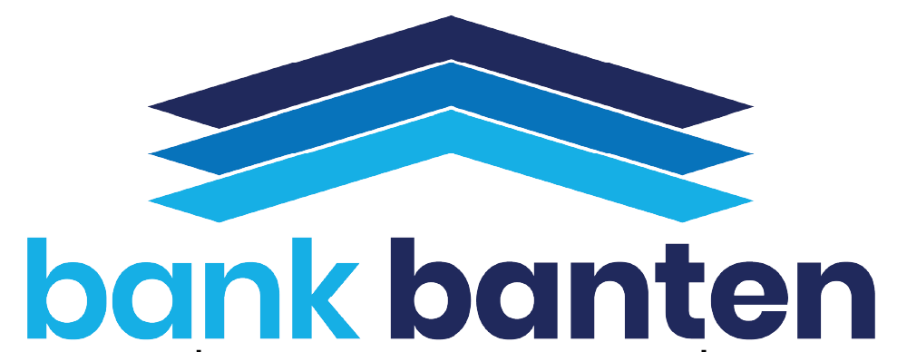


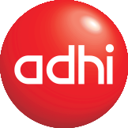


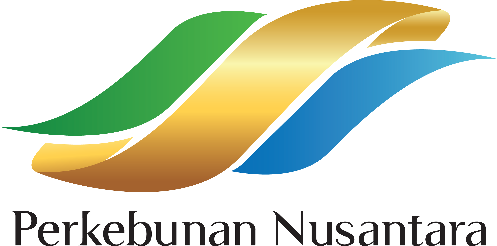


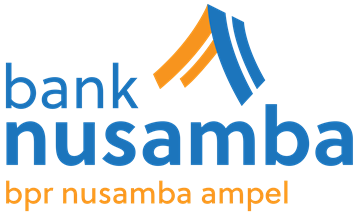
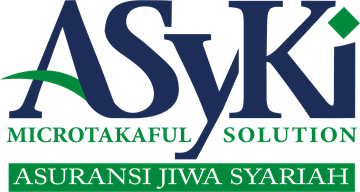
| No | Nama Lembaga & Instansi | Kategori | Lingkup Kerjasama Penilaian | Status |
|---|---|---|---|---|
| 01 |
PT Bank Rakyat Indonesia (Persero) Tbk
|
Bank BUMN & BUMD |
Penilaian Agunan SME, Komersial & Sindikasi Nasional
Penilaian Agunan Fasilitas Kredit Komersial, Agribisnis & Sindikasi BUMN
|
Aktif |
| 02 |
PT Bank Tabungan Negara (Persero) Tbk
|
Bank BUMN & BUMD |
Penilaian Proyek Perumahan, KPR Komersial & Agunan Bank
Valuasi Proyek Perumahan, Real Estat Komersial & Agunan Hak Tanggungan
|
Aktif |
| 03 |
PT Bank Pembangunan Daerah Jawa Barat dan Banten Tbk
|
Bank BUMN & BUMD |
Penilaian Agunan Komersial, Properti & Aset Sindikasi
Penilaian Agunan Fasilitas Komersial, Properti & Sindikasi Daerah
|
Aktif |
| 04 |
PT Bank Pembangunan Daerah Sumatera Barat
|
Bank BUMN & BUMD |
Penilaian Agunan Komersial & Properti Regional Wilayah
Penilaian Agunan Kredit Komersial, Properti & UMKM Regional Sumatera
|
Aktif |
| 05 |
PT Bank Pembangunan Daerah Banten (Perseroda) Tbk
Histori: PT Bank Pembangunan Daerah Banten Tbk (sebelum penyesuaian Perseroda)
|
Bank BUMN & BUMD |
Penilaian Agunan Properti & Fasilitas Kredit Komersial
Penilaian Agunan Kredit Properti, Komersial & Infrastruktur Banten
|
Aktif |
| 07 |
PT Bank Central Asia Tbk
|
Bank Swasta |
Penilaian Agunan Komersial, KPR & Fasilitas Korporasi
Penilaian Agunan Fasilitas Komersial, Hak Tanggungan & Korporasi
|
Aktif |
| 08 |
PT Bank Kasikorn Indonesia Tbk
Histori: PT Bank Maspion Indonesia Tbk (sebelum akuisisi Kasikornbank)
|
Bank Swasta |
Penilaian Agunan Kredit Komersial & Korporasi Multinasional
Valuasi Agunan Kredit Komersial, Industri & Korporasi Multinasional
|
Aktif |
| 09 |
Bank Sahabat Sampoerna
|
Bank Swasta |
Penilaian Agunan Kredit Komersial, SME & Hak Tanggungan
Penilaian Agunan Fasilitas Kredit Komersial, Usaha SME, Properti & Hak Tanggungan
|
Aktif |
| 10 |
PT Bank Ganesha Tbk
|
Bank Swasta |
Penilaian Agunan Kredit Komersial & Hak Tanggungan
Valuasi Agunan Fasilitas Kredit Komersial & Properti
|
Aktif |
| 11 |
PT Bank Sinarmas Tbk
|
Bank Swasta |
Penilaian Agunan SME & Fasilitas Pembiayaan Komersial
Penilaian Agunan Fasilitas Usaha, Komersial & SME Nasional
|
Aktif |
| 12 |
PT Bank OK Indonesia Tbk
|
Bank Swasta |
Penilaian Agunan Kredit Komersial & Aset Jaminan
Penilaian Agunan Kredit Korporasi & Aset Komersial
|
Aktif |
| 13 |
PT Bank Nationalnobu Tbk
|
Bank Swasta |
Penilaian Agunan Properti, Komersial & Fasilitas KPR
Valuasi Agunan Fasilitas KPR, Real Estat & Fasilitas Komersial
|
Aktif |
| 14 |
PT Bank DBS Indonesia
|
Bank Swasta |
Penilaian Agunan Korporasi & Pembiayaan Komersial
Penilaian Agunan Korporasi, Sindikasi & Pembiayaan Institusional
|
Aktif |
| 17 |
PT PLN (Persero) UIP SUMBAGUT
Histori: Unit Induk Pembangunan Sumatera Bagian Utara
|
BUMN & Anak Usaha |
Transmisi Listrik SUTT / SUTET & Kompensasi Jalur ROW
Penilaian Kompensasi Jalur ROW Transmisi, Tapak Tower & Pengadaan Tanah SUTT/SUTET
|
Aktif |
| 18 |
PT PLN (Persero) UIPKIT SUMATERA
Histori: Unit Induk Pembangkitan dan Penyaluran Sumatera
|
BUMN & Anak Usaha |
Valuasi Aset Pembangkit Listrik & Sarana Penunjang
Valuasi Aset Pembangkitan Tenaga Listrik, Gardu Induk & Sarana Penunjang
|
Aktif |
| 19 |
PT PLN (Persero) UIP SUMBAGSEL
Histori: Unit Induk Pembangunan Sumatera Bagian Selatan
|
BUMN & Anak Usaha |
Pembangunan Transmisi Tenaga Listrik & Tapak Tower
Penilaian Pengadaan Tanah Tapak Tower, Gardu Induk & Kompensasi ROW Listrik
|
Aktif |
| 20 |
PT PLN (Persero) UP2B Jawa Madura Bali
Histori: Unit Pelaksana Pengatur Beban Jawa Madura Bali
|
BUMN & Anak Usaha |
Valuasi Penyaluran & Pengatur Beban Listrik Jamali
Valuasi Aset Sarana Penyaluran, Pengatur Beban & Infrastruktur Ketenagalistrikan
|
Aktif |
| 21 |
PT Pertamina EP – Zona 4, Regional 1 Sumatera (eks Asset 2)
Histori: PT Pertamina EP Asset II / Asset 2 (Prabumulih, Pendopo, Limau, Adera)
|
BUMN & Anak Usaha |
Valuasi Fasilitas Produksi Hulu Migas & Bangunan Pabrik
Valuasi Fasilitas Produksi Hulu Migas, Fasilitas Pemrosesan & Bangunan Pabrik
|
Aktif |
| 22 |
PT Pertamina EP – eks Asset 5, Regional 3 Kalimantan
Histori: PT Pertamina EP Asset V / Asset 5 (Sangatta, Bunyu, Tarakan, Tanjung)
|
BUMN & Anak Usaha |
Valuasi Aset Lapangan Operasional Migas Kalimantan
Valuasi Aset Operasional Hulu Migas, Lapangan Eksplorasi & Bangunan Pendukung
|
Aktif |
| 23 |
PT Pertamina Hulu Sanga Sanga (PHSS) – Zona 9, Regional 3 Kalimantan
Histori: PT Pertamina Hulu Sanga Sanga (PHSS)
|
BUMN & Anak Usaha |
Wilayah Kerja Migas Sanga Sanga & Fasilitas Pemrosesan
Penilaian Aset Wilayah Kerja Migas Sanga Sanga, Instalasi Pemrosesan & Fasilitas Logistik
|
Aktif |
| 24 |
PT Waskita Karya (Persero) Tbk
|
BUMN & Anak Usaha |
Valuasi Proyek Infrastruktur, Jalan Tol & Aset Properti
Valuasi Proyek Konstruksi, Jalan Tol, Batching Plant & Properti Investasi
|
Aktif |
| 25 |
PT Adhi Karya (Persero) Tbk
|
BUMN & Anak Usaha |
Penilaian Properti Komersial, Depo LRT & Fasilitas Konstruksi
Penilaian Properti Komersial, Depo Transit TOD & Fasilitas Proyek Infrastruktur
|
Aktif |
| 26 |
PT Semen Indonesia (Persero) Tbk — SIG
Histori: PT Semen Gresik (Persero) Tbk
|
BUMN & Anak Usaha |
Valuasi Pabrik Semen, Lahan Tambang & Aset Industri
Valuasi Fasilitas Pabrik Semen, Wilayah Konsesi Tambang & Sarana Logistik
|
Aktif |
| 27 |
PT Bio Farma (Persero)
|
BUMN & Anak Usaha |
Valuasi Fasilitas Produksi Farmasi, Laboratorium & Gedung
Valuasi Fasilitas Pabrik Farmasi, Instalasi Laboratorium & Properti Operasional
|
Aktif |
| 28 |
PT Perkebunan Nusantara I — Regional 2 (eks PTPN VIII)
Histori: PT Perkebunan Nusantara VIII (Persero) / PTPN VIII / PTPN 8
|
BUMN & Anak Usaha |
Valuasi Kebun, Pabrik Pengolahan & Aset Tanaman Biologis (PSAK 241)
Valuasi Hak Guna Usaha (HGU), Tanaman Perkebunan (PSAK 241) & Pabrik PKS/Teh
|
Aktif |
| 29 |
Perusahaan Perseroan (Persero) PT Pegadaian
|
BUMN & Anak Usaha |
Penilaian Aset Gedung Kantor, Properti Operasional & Agunan
Penilaian Gedung Kantor Cabang, Properti Operasional & Aset Jaminan Gadai
|
Aktif |
| 30 |
PT Taspen (Persero)
|
BUMN & Anak Usaha |
Valuasi Portofolio Properti Investasi Dana Pensiun ASN
Valuasi Properti Investasi, Gedung Komersial & Portofolio Dana Pensiun ASN
|
Aktif |
| 31 |
Perum BULOG
|
BUMN & Anak Usaha |
Valuasi Kompleks Pergudangan Logistik Pangan Nasional
Valuasi Kompleks Pergudangan Logistik, Fasilitas Silo & Lahan Distribusi Pangan
|
Aktif |
| 06 |
Lembaga Pembiayaan Ekspor Indonesia — Indonesia Eximbank
|
Instansi Pemerintah & Lembaga Khusus |
Valuasi Fasilitas Pembiayaan Ekspor & Sindikasi LPEI
Valuasi Agunan Fasilitas Pembiayaan Ekspor Nasional & Penjaminan Sindikasi LPEI
|
Aktif |
| 15 |
Kementerian Pekerjaan Umum RI
Histori: Kementerian Pekerjaan Umum dan Perumahan Rakyat RI (PUPR)
|
Instansi Pemerintah & Lembaga Khusus |
Pengadaan Tanah Jalan Tol PSN & Infrastruktur Nasional (SPI 204)
Penilaian Pengadaan Tanah Proyek Strategis Nasional (PSN) Tol Trans Jawa & Sumatera (SPI 204)
|
Aktif |
| 16 |
Kementerian Agraria dan Tata Ruang/Badan Pertanahan Nasional RI
|
Instansi Pemerintah & Lembaga Khusus |
Lisensi Penilai Pertanahan Nasional Resmi (SPI 204)
Regulator & Pemberi Lisensi Resmi Penilai Pertanahan Pengadaan Tanah Kepentingan Umum (SPI 204)
|
Aktif |
| 32 |
PT United Tractors Tbk
|
Perusahaan Swasta |
Valuasi Fasilitas Pabrikasi, Workshop & Lahan Alat Berat
Valuasi Fasilitas Pabrikasi, Workshop Reparasi Alat Berat, Depo & Properti Industri
|
Aktif |
| 33 |
PT Japfa Comfeed Indonesia Tbk
|
Perusahaan Swasta |
Valuasi Fasilitas Feedmill, Pabrik & Peternakan Terpadu
Valuasi Kompleks Pabrik Pakan Ternak (Feedmill), Farm Breeding & Fasilitas Industri
|
Aktif |
| 34 |
PT Toyota-Astra Motor
Histori: PT Toyota Astra Motor Tbk (penulisan akhiran Tbk yang tidak tepat sebelumnya)
|
Perusahaan Swasta |
Valuasi Fasilitas Dealer, Depo Logistik & Properti Komersial
Valuasi Jaringan Fasilitas Dealer Resmi, Depo Suku Cadang & Properti Komersial
|
Aktif |
| 35 |
PT PNM Venture Capital
|
Pembiayaan, Modal Ventura & Lelang |
Penilaian Portofolio Investasi & Pembiayaan Usaha Mikro
Penilaian Portofolio Investasi Saham, Pembiayaan Usaha Mikro & Agunan Ventura
|
Aktif |
| 36 |
PT Clipan Finance Indonesia Tbk
|
Pembiayaan, Modal Ventura & Lelang |
Valuasi Jaminan Pembiayaan Alat Berat & Kendaraan Komersial
Valuasi Agunan Pembiayaan Alat Berat, Armada Transportasi & Fasilitas Kredit Komersial
|
Aktif |
| 37 |
Balai Lelang Batavia
|
Pembiayaan, Modal Ventura & Lelang |
Penilaian Nilai Likuidasi Aset Agunan Lelang Eksekusi
Penilaian Nilai Pasar & Nilai Likuidasi Aset Jaminan untuk Lelang Eksekusi & Sukarela
|
Aktif |
| 38 |
PT Bank Perekonomian Rakyat Sukabumi (Perseroda)
Histori: Perumda BPR Sukabumi
|
BPR & BPRS |
Penilaian Agunan Kredit UMKM & Fasilitas Komersial
Penilaian Agunan Kredit UMKM, Properti Residensial & Fasilitas Usaha Daerah
|
Aktif |
| 39 |
BPR Hasta Mulya
|
BPR & BPRS |
Penilaian Agunan Properti & Fasilitas Usaha Mikro
Penilaian Agunan Fasilitas Kredit Mikro, Properti Komersial & Usaha Kecil
|
Aktif |
| 40 |
BPR Mega Karsa
|
BPR & BPRS |
Penilaian Agunan Kredit Komersial Regional
Valuasi Agunan Kredit Usaha Produktif, Tanah & Bangunan Komersial
|
Aktif |
| 41 |
BPRS Tangerang
|
BPR & BPRS |
Valuasi Agunan Akad Pembiayaan Syariah
Valuasi Agunan Akad Murabahah, Musyarakah & Properti Syariah
|
Aktif |
| 42 |
BPRS Bina Awalul Hasanah
|
BPR & BPRS |
Penilaian Agunan Pembiayaan Produktif Syariah
Penilaian Agunan Pembiayaan Produktif Syariah, UMKM & Properti Usaha
|
Aktif |
| 43 |
BPR Nusamba
|
BPR & BPRS |
Penilaian Agunan Kredit Jaringan Nasional BPR
Penilaian Agunan Kredit UMKM, Properti Komersial & Jaringan Perbankan Nusamba
|
Aktif |
| 44 |
PT Asuransi Takaful Keluarga
|
Asuransi |
Penilaian Portofolio Investasi & Properti Syariah
Penilaian Portofolio Investasi Properti Syariah & Aset Tetap Perusahaan
|
Aktif |
| 45 |
PT Asuransi Asyki Syariah
|
Asuransi |
Valuasi Aset Penjaminan & Pembiayaan Umum Syariah
Valuasi Aset Penjaminan Pembiayaan Umum Syariah & Aset Properti Perusahaan
|
Aktif |
Tidak ada rekanan yang cocok dengan pencarian.
Coba gunakan kata kunci lain seperti BRI, BJB, Kasikorn, PLN, atau pilih kategori "Semua".
Galeri Kegiatan Survei & Diklat Lapangan
Dokumentasi nyata kegiatan inspeksi fisik, pemotretan ber-GPS, koordinasi bersama satker kementerian, dan rapat kerja dewan pimpinan nasional.
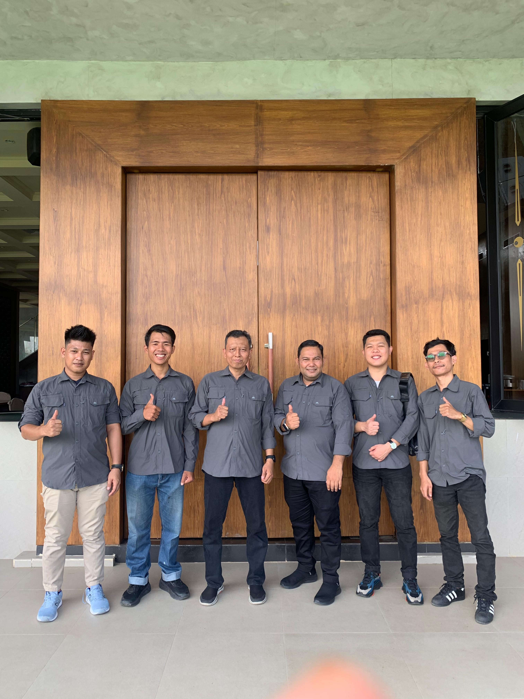
Tim Operasional Palembang
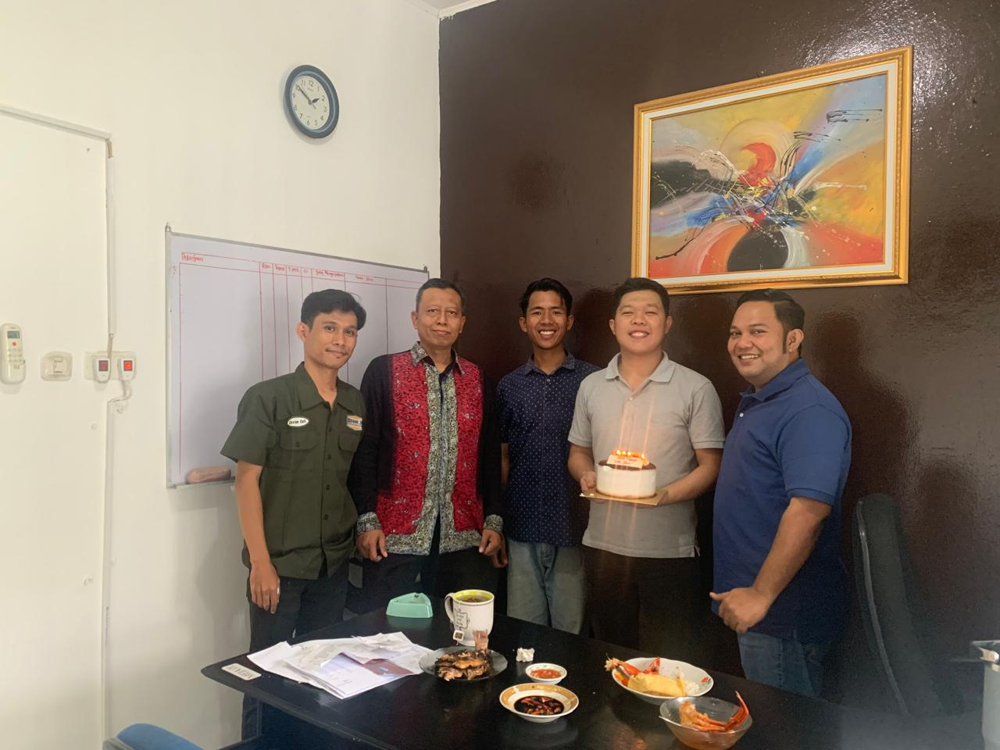
Kesiapan Kantor Palembang
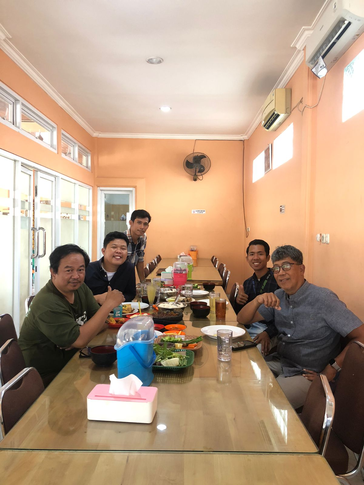
Pengarahan Manajemen Pusat
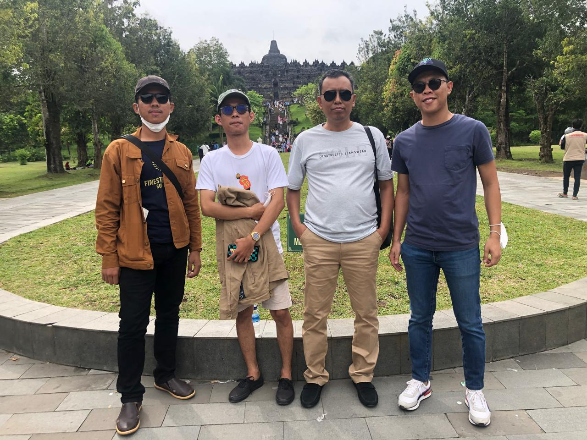
Sinergi Tim Palembang

Operasional Cabang Padang
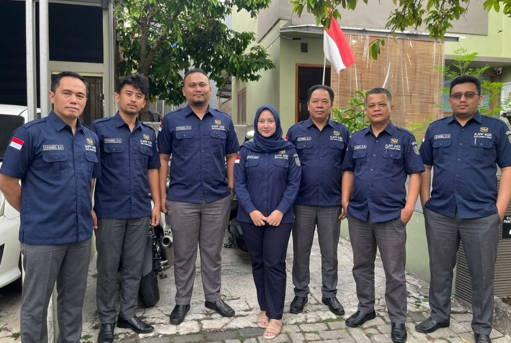
Tim KJPP NSR Kantor Cabang Bandung
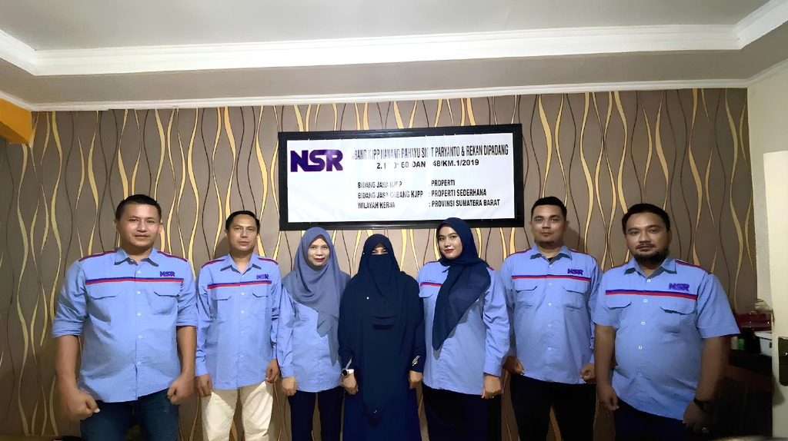
Tim KJPP NSR Kantor Cabang Padang
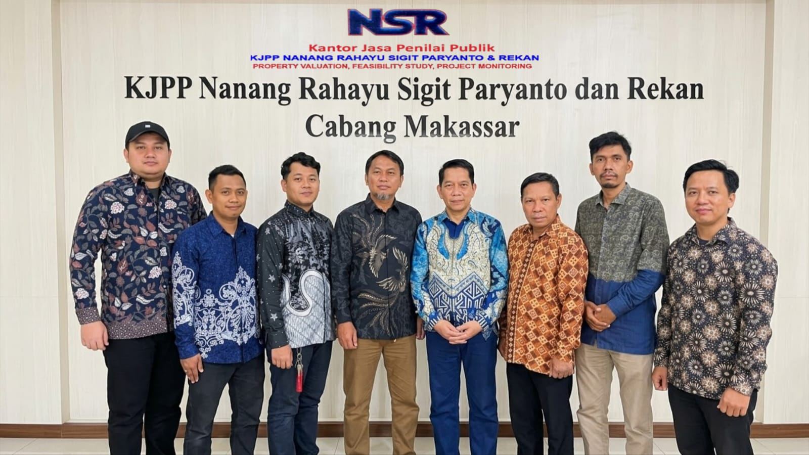
Tim KJPP NSR Cabang Makassar
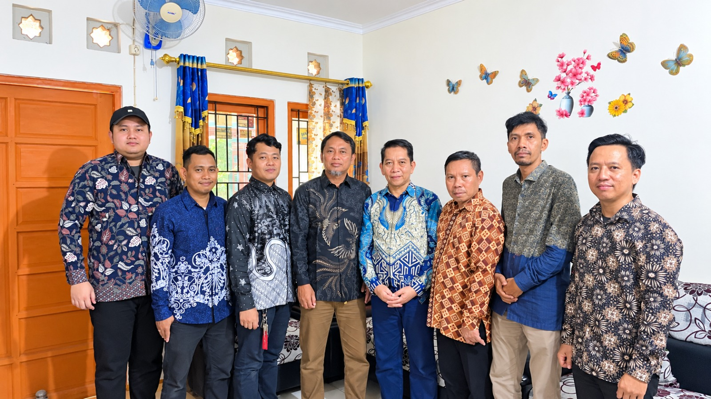
Dokumentasi Tim Cabang Makassar

Musyawarah Ganti Rugi Lahan

Rakor Akses Tol IKN Kaltim
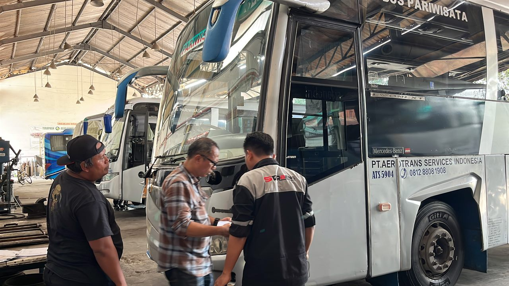
Inspeksi Armada Transportasi

Pendidikan Khusus SPI 204
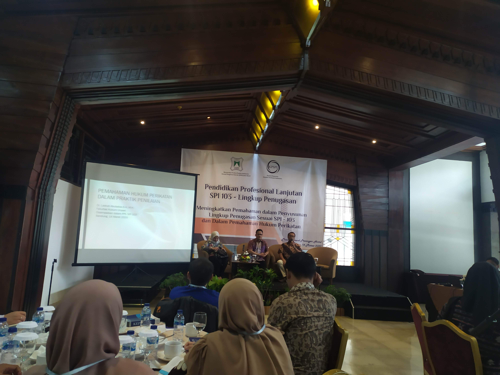
PPL MAPPI Hukum Perikatan
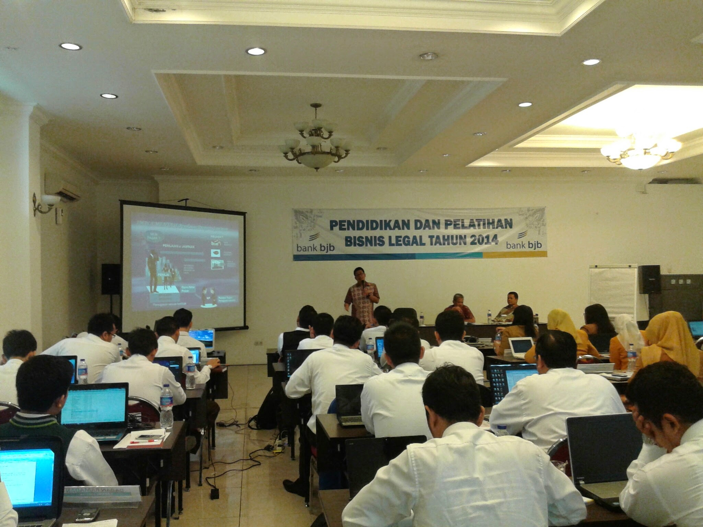
Valuasi Agunan Bank BJB
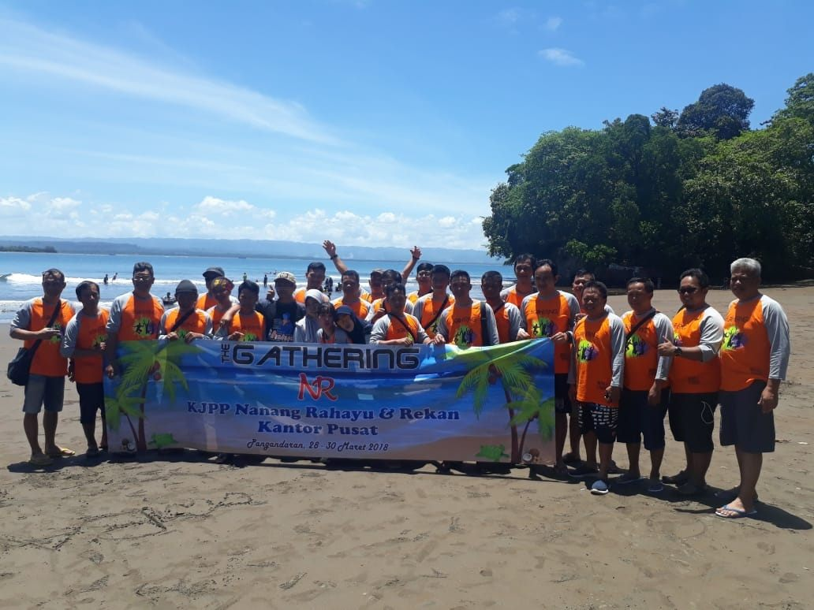
Gathering Akbar Nasional
Ingin Menjalin Kerjasama Rekanan dengan KJPP NSR?
Kami siap memenuhi kualifikasi seleksi rekanan baru lembaga perbankan, BUMN, dan korporasi terdaftar OJK.